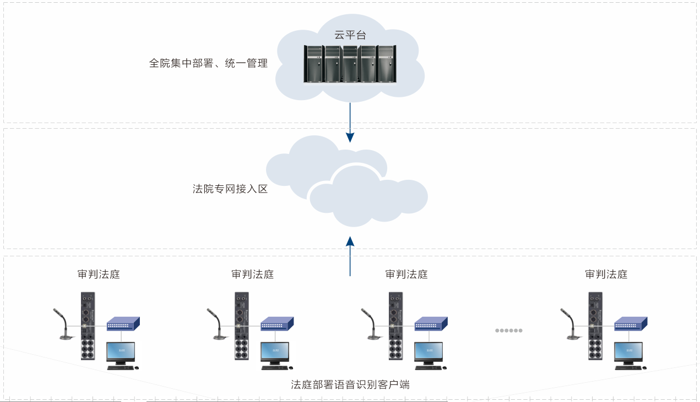
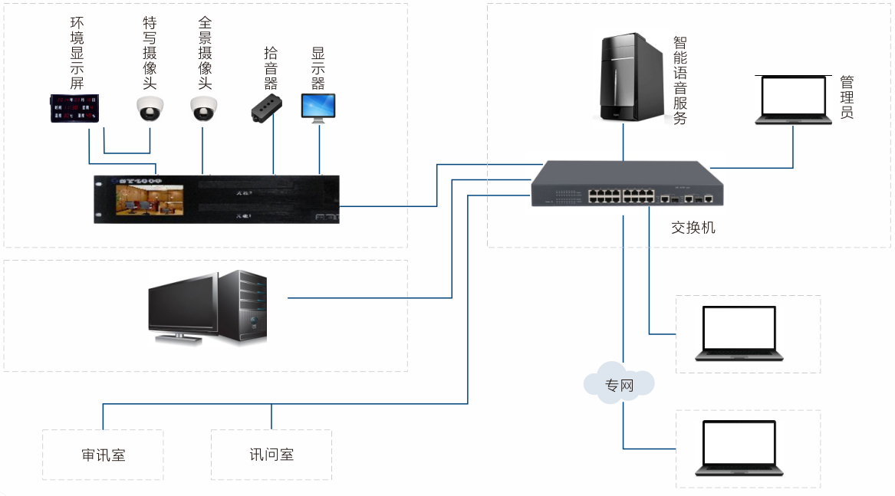
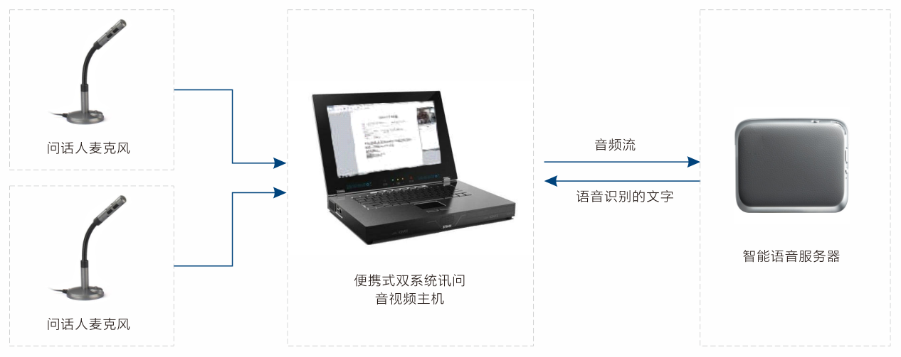
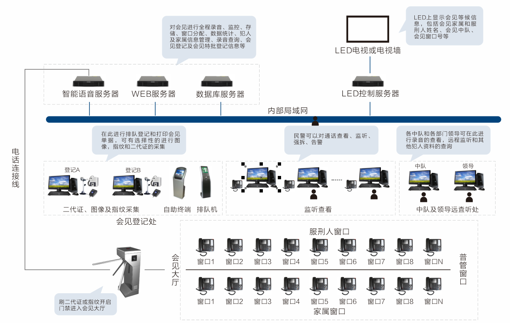

法院智能语音庭审系统
以智能语音识别、电子白板等技术为基础，与原有科技法庭应用系统深度融合，一键开启庭审笔录智能语音转录、电子证据卷宗自动获取，电子证据语音唤醒、证据与笔录同屏展示、证据同屏批注、质证留痕等智能管理功能，从而成倍提升书记员的记录速度，大幅缩短庭审时长；与电子卷宗实时同步，为合议庭成员提供即时通讯功能，方便案情实时交流、快速调阅卷宗，提升办案质效。
系统简介
信大煜坤法院智能管理系统以智能语音识别等人工智能技术为基础，与原有科技法庭应用系统深度融合，打造智慧法庭深度应用，全程语音操控，构建智慧法院全景语音庭审系统，实时转录庭审内容生成庭审笔录，一键开启庭审笔录智能语音转录、证据与笔录同屏显示、证据同屏批注、质证留痕等智能管理功能，从而成倍提升书记员的记录速度，大幅缩短庭审时长，与电子卷宗实时同步，快速调阅卷宗，提升办案质效。
功能特点
- 语音播报
将设定的法律纪律、法庭规则以及案件当事人身份信息等，通过语音合成技术合成动态语音并播报出来，可大大减少法官和书记员事务性的简单劳动。
- 语音独立备份
在庭审同步录音录像异常时，录音识别的完整音频信息可作为庭审录音录像的备份系统，为“每庭必录”提供一份录音数据支持。
- 智能语音识别
在科技法庭应用系统中，集成语音识别能力。一键开庭时，自动开启语音识别与电子质证功能，一键闭庭，自动获取庭审笔录并传回法综系统。
- 电子卷宗调阅
根据案件编号自动获取对应的电子卷宗内容，包括庭审笔录、证据、庭审录像等。主审法官及合议庭成员可根据案件审理需要，进行手工查阅，通过语音识别引擎，可支持语音检索，实现电子卷宗的“随讲随翻”功能
- 提升庭审质效
通过智能语音识别进行庭审笔录自动转录，电子证据的自动获取、电子质证等方式，可大幅缩短庭审时间，提升庭审质效。普通案件审理时长一般可减少20%，复杂案件审理时长可减少近50%。
- 高语音识别率
标准普通话识别率不低于95%。
系统架构

公安智能语音审讯系统
系统简介
信大煜坤公安智能语音审讯系统是以智能语音识别等人工智能技术为基础，结合“一站式办案、合成化作战、智能化管理、全流程监督”的办案模式，将相关人员的发言信息转换成文字信息，并生成文本文件、录音文件，方便查阅，且可以选择自动转写笔录，也可在笔录记录过程中引用语音识别的文字。同时语音笔录系统与办案区联动，大大提高办案效率。
功能特点
- 提升审讯效率
系统能够将参与办案人员的陈述内容自动实时识别成文字，让办案人员的录入效率从以往每分钟最高输入120-150个字提升到当前每分钟输入250-350个字，平均能够缩短1倍的记录时长，大大减轻了办案人员的工作压力
- 私有云平台
采用私有云部署方案，与外网实现物理隔离，保障了数据的安全性，基于公安/检察院专网上构建智能语音平台，提供语音识别，语音合成等基础，通过针对不同地区、不同类别案件的定制化语音识别模型和自定义关键词识别优化工具，可以有效提升对每个案件的语音识别准确率，为提升审讯效率和办案人员的工作效率提供强有力的技术支撑。
- 提升办案效率
系统能够做到整个审讯过程全量信息的自动记录和保存，为后续的办案流程提供了客观公正的全面记录，对案件处理效率平均提升20%。
- 标准接口，兼容性高
系统提供标准开放式接口，可以与公安行业的业务系统进行对接，充分利用现有资源。
- 一体化集成系统
针对公检法行业的要求，在同录设备的基础上嵌入智能语音识别模块，将原本的两个系统继承于一体，不仅减少了相应的费用，也减少了外出办案的负担。%，复杂案件审理时长可减少近50%。
- 自由方言定制
针对不同地区，不同类型的案件，系统可预先进行语音识别模型的定制化训练，提高语音识别标准率。
系统架构

检务智能语音审讯系统
系统简介
大煜坤检务智能语音审讯系统是以“智能语音AI平台”推出的“语音转文字”系统化解决方案。其包含语音识别引擎，语音转写客户端、语音识别专用服务器、语音识别定制话筒、语音识别定制音频处理器等助力检察机关建设智慧检务，从而实现办案全程留痕、精确回溯、固定关键证据、精确提取资料信息，提升书记员文字录入效率，显著提高检察机关工作人员工作效率，保障司法办案的规范化。
功能特点
- 提升审讯效率
系统能够将办案人员的陈述内容自动实时识别成文字，让办案人员的录入效率从以往每分钟输入120-150个字提升到当前没人中输入250-350个字，平均能够缩短1倍的记录时长，大大减轻了办案人员的工作压力。
- 提升办案效率
系统能够做到整个审讯过程全量信息的自动记录和保存，为后续的办案流程提供了客观公正的全面记录，对案件处理效率能够平均提升20%。
- 便携式设备方便部署
便携式设备适用于移动办案，无需联网，语音识别在单机上运行，布置方便可靠。
- 证据的关联性和追溯性
审讯过程的录像、文字、证据具有关联性和追溯性，通过其中的某一元素点即可快速追溯至任何一段需要的录像、语音、文字、证据元素。
系统架构

智能语音监狱会见系统
系统简介
信大煜坤智能语音监狱会见系统是以“智能语音AI平台”推出的系统化解决方案，是智慧监狱的重要组成部分。会见系统以语音识别、语义分析、大数据处理技术为基础面向狱警提供数据转换、储存、检验、分析等功能服务，通过灵活可配的检查模型和语音引擎实现语音自动转化成文本，批量检测、识别风险信息，从而大大节省干警的工作量。同时保证会见过程的安全性、可靠性、可控性、可操作性，也更便于干警掌握在押人的思想动态，从而更好地做好在押人的教育改造工作。
功能特点
- 强大的监控功能
对于通话进行全程录音识别。通过计算机网络，无论是监区内、还是在监狱办公室、甚至是上级监狱管理局，都可以对当前通话进行实时监控，包括查看所有监区的亲情电话使用情况，显示每个通话中的服刑人员资料和家属资料，对通话进行监听，并且可以随时中止通话，或者对通话进行插话。
- 声纹识别
通过分析语音中说话人个性相关的特征参数，来自动识别说话人身份，可以针对服刑人员、家属、诈骗人员或者黑名单上的人物进行识别。
- 情绪分析
通过分析服刑人员的语气、语调等信息，实现对服务人员及家属情绪波动的识别。
- 语音识别
语音识别引擎具有语法识别、自由说话识别、关键词检出和语音检查分析四中识别能力，能够正确识别语音文件从而形成对应的文本内容，并提供静音检测、情绪检测、关键次和说话者分离的识别结果。从而将非结构化的语音文件转换成结构化的索引信息。
- 内容检索
针对海量待检查语音通过制定关键词进行检索，实现低成本、高效率的质检目的。如：可设置话术用语、通风报信、禁忌语等关键词来实现语音检查。
系统架构
